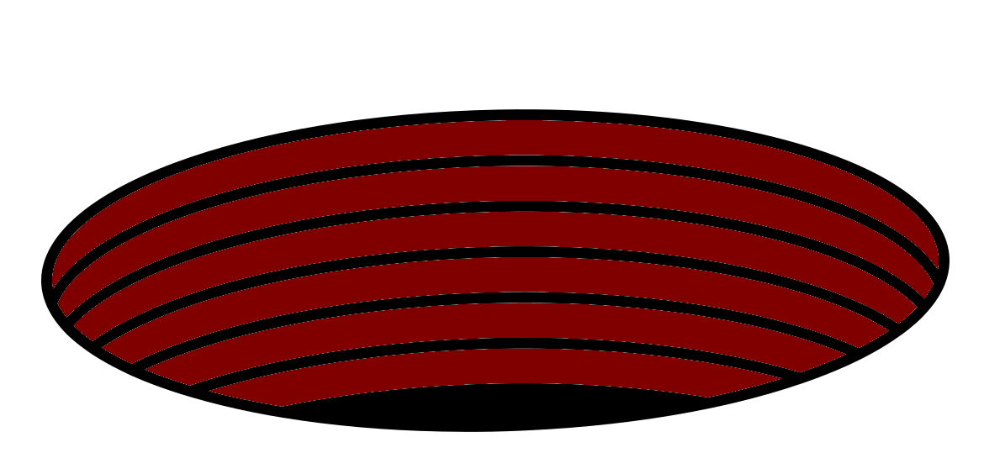

TIDY: Terrifying Infiltration of Dump Yard

Mission
DOT raiders charge the team with infiltrating The Big Hole dump yard in Kimberley, South Africa. Dump yards are where trash, chemicals, and nuclear waste are disposed of by tipping it into the DOT. These sites are heavily guarded due to the contents but also to stop DOT raiders and kaiju from reaching the surface via the mouth into and out of the DOT.
This site was originally the Big Hole open pit quarry. However, once they found the mouth into the DOT it was developed into a dump yard. They made the hole wider and now it is used to remove the vast majority of hazardous trash for the CAC and some neighbouring countries. It is run by Carafe, a subsidiary company of Kraken.
The team are provided with a floppy disk by the DOT raiders to disable the security systems including automated turrets. However, it will also disable the Kaiju Sonic Disruption System (KSDS). When/if this occurs small kaiju, SCORPIUS, will rush into the dumping site only to be followed by a massive kaiju, PYTHON. PYTHON consists of three gigantic serpents connected by a giant obsidian orb.
Double twist, this was a plan by The Mooners to test out their CARGO MECHA against a real kaiju. Once PYTHON emerges the KSDS will reactivate, stopping further kaiju from leaving the DOT. The team will be able to pilot CARGO MECHAS hidden within cargo crates to stop the kaiju. There will also be back-up rods from god on hand if the CARGO MECHAS fail.
The Big Hole dump yard
The dump yard is a large circular hole with sheer vertical walls. Dark, noisy, deep, and hot it is easy to forget you can look up at the sky. There are only two ways in and out, the Elevator and the Mouth.
Embedded into the cliff wall are cranes used to move cargo crates. These cargo crates fill up most of the space giving The Hole a feeling of a subterranean cargo dock. Seagulls squawk but the salt smell is replaced with that of damp, rot, and chemicals.
The Elevator
At the north of the hole is a large open elevator going from the surface to the bottom of the pit. It is primarily used to move loaded cargo crates down, fill of trash, and empty crates back up. So utilitarian is the elevator that passengers are transported up and down in a designated cargo crate.
At the surface, near the elevator, lie many train tracks and container cranes. It runs 24/7 with many trains coming and going.
The elevator is slow and takes a long time to go up or down. It makes up for this by being able to transport 20,000 cargo crates at a time.
The Mouth
At the south of the hole is a large cave. Within this is a Mouth of Tartarus, an entrance to the DOT. The mouth is a pitch black circle that lays completely flat to the earth. Remote controlled machines tip trash filled cargo crates into the mouth, the operators at a safe distance on the second floor of the Node.
The Node
The node is a large 5 story cylindrical building in the very centre of the Big Hole. Blacked out Windows line the entire circumference, with bright white concrete it gives off the appearance of a striped vase. Another post-modern brutalist building, walls within the building either curve parallel to the circumference or run radially.
The Node acts as the main building for staff with security increasing as you go up the floors. There are no stairs instead a single pill shaped elevator in the centre of the building provides access to the floors. However, this elevator requires a pair of security cards, requiring at least 2 passengers at a time.
Ground floor
Reception, museum, and canteen (Level 1 security)
The entrance of the building contains a reception and a small museum about The Big Hole and the Carafe company. It is all boring, sterile corporate propaganda. It shows how proud the company is to have automated defences to resist DOT raider and kaiju incursions.
A large room at the back contains a canteen for the staff.
1st floor
Living quarters and recreation rooms (Level 1 security)
Various recreation rooms with tvs, games tables, and libraries. It is a surprisingly still place, employees taking a reprieve from the exhausting labour. They live in these quarters for 14 days whilst working, then go to their homes until they want/need to work another shift.
A separate section for security guards requires a pair of Level 3 security passes to access.
2nd floor
Operations and engineering (Level 2 security)
Where the real work in the building is done. Team leaders congregate to meet and coordinate the day to day running.
Crane operators work within booths, remote controlling the cranes.
There are also workrooms for engineers to fix smaller issues and help other engineers via radio. These rooms contain many tools and manuals.
3rd floor
Management (Level 3 security)
Offices for any important members of staff. Contains a few penthouses for visiting VIPs. Furnished with expensive paintings specifically designed to fit along the curved walls.
4th floor
Security (Level 3 security)
This floor contains the command room for security. From here the 2 security co-heads, Arno and Lindewe watch over the CCTV cameras and relay orders to the rest of security. This same room contains all the various terminals related to the defenses. This is where the floppy disk will need to be used.
Other rooms include contains an armoury, gym, and practice shooting range.
Security
Security is run by Kraken with many pairs of KRAKEN SECURITY GUARDS patrolling the site. The security is co-run by:
- Arno (he/him), meaning eagle, the KRAKEN SECURITY WATCHER
- Lindewe (she/her), meaning waited for, the KRAKEN SECURITY COMMANDER
There are 3 levels of security conferred by security passes. They are hierarchical, meaning level 3 security has the access of 1, 2, & 3. Different staff members have different levels.
- Level 1: Reception, hospitality, and janitorial staff. These staff members must be escorted by a pair of KRAKEN SECURITY GUARDS if they need access to higher clearance areas.
- Level 2: Engineers, and machinery operators.
- Level 3: Management and security guards.
Along the cliff wall, top of the Node, and within the Mouth are mounted auto guns (1D6+1 DAMAGE). They have very primitive auto firing tech so targets must be chosen by security within the control room in the Node.
Infiltration
The method of infiltration is left up to the referee and their players. For inspiration a list of prompts is provided below:
- The team disguises themselves as corporate investors and so tour the site
- The team get jobs within the site
- The team stowaway within a trash cargo crate
- The team parachutes on top of the node for a quick and dirty approach, very high risk
- The team digs their way into the site
Kaiju vs Mecha
As soon as the security system is deactivated a siren will go off with a voice clearly stating “Warning KDS deactivated” repeatedly. The terminal screen will show a map of the Hole with a position marked with a red crescent moon, towards the south west. It will instruct their mission has changed and they must kill the invaders from the DOT. They must use what is in the cargo crates marked with the flag of The Moon, a red crescent moon on a white background. Haste is urged. Of course, if any members want to stay in the Node to reactivate and use the defenses they shoudl be allowed to try.
Soon massive amounts of SCORPIUS will escape from from the DOT and infest the site. This will keep the security guards busy and make the team’s trek to the designated spot dangerous.
If they successfully arrive at the crates they will find one for each team member, this is also a good place for emergency insertions. Within each crate is a CARGO MECHA that will take the team member as its pilot. Now the team have a chance against the kaiju.
After some combat with the swarm of SCORPIUS a large rattle will sound from the Mouth. This will cause the kaiju to instantly flee but many close to the cave will be decimated as PYTHON emerges. The team will be informed the mission is to eradicate it. Thankfully no more kaiju will emerge as the KDS warning ceases.
The team will be informed a Rod from God satellite is moving into position above the Hole. They will be able to fire this every 10 actions, or alternative option of your choice, but will need to use the handheld laser targetters within their mechas to aim it. Each Rod from God attack does 3D6+3 DAMAGE with the ANTI-MATERIAL tag (Deals double DAMAGE to vehicles and structures; cumbersome to carry around (F:UE)).
The site is littered with stacked cargo containers acting as obstacles to movement. Many contain hazardous, flammable, and explosive materials. Use these as the referee and players see fit.
Additionally, there are also large cargo cranes that could be used by the team to pin or harm PYTHON.
Reward
Once all of PYTHON is killed the mission will end, the team being able to easily escpe in the chaos. The team will be rewarded with one newly rolled up CARGO MECHA and an appropriate cargo crate for transport.